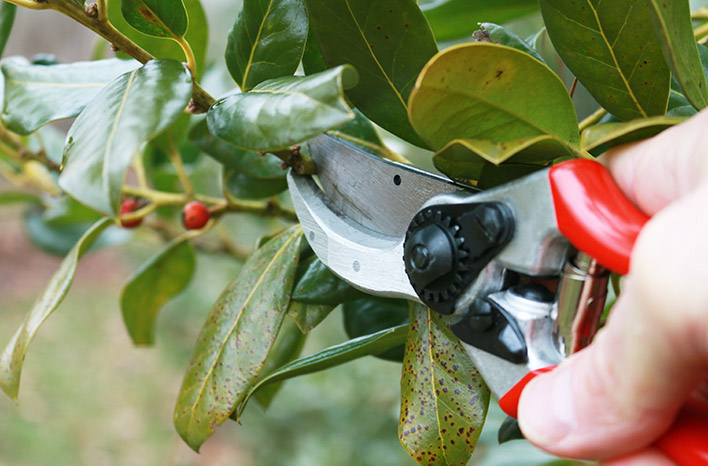

Features & Guides
Everything you need to know about urban planting, from choosing the right greenery to maintaining it year-round.
Plant Guide
Discover plants that thrive in your local environment, specifically tailored for hot and dry climates.
Drought-Resistant Plants
A comprehensive list of succulents, cacti, and native shrubs that require minimal watering.
Basic Plant Info
Learn about soil requirements, sunlight needs, and the optimal conditions for your urban garden.
Ecological Benefits
Understand how these plants contribute to air purification, temperature regulation, and local biodiversity.
Planting Instructions
Comprehensive step-by-step guides on how to plant trees and smaller plants successfully.
Getting Started: Materials Needed
- High-Quality Soil: Look for loam soil with good drainage. Can be purchased at local garden centers or online.
- Tools: Hand trowel, gardening gloves, and a watering can.
- Fertilizer: Organic compost or slow-release fertilizer pellets.
Step-by-Step Planting
- Preparation: Choose a spot with appropriate sunlight for your plant type. Dig a hole twice as wide as the root ball, but no deeper.
- Loosening Roots: Gently massage the root ball to encourage outward growth.
- Positioning: Place the plant in the center of the hole. Ensure the base of the stem is level with the surrounding soil.
- Backfilling: Fill the hole with a mix of native soil and compost. Tamp down gently to remove air pockets.
- Watering: Water thoroughly immediately after planting to settle the soil. Add a 2-inch layer of mulch around the base to retain moisture.

Preparation
Choose the right spot, test the soil drainage, and gather the necessary beginner-friendly tools.
The Planting Process
Digging the right-sized hole, loosening the root ball, and positioning the plant perfectly.
Post-Planting Care
Mulching the base, providing the initial deep watering, and staking the tree if necessary.
Plant Care Tips
Ensure your greenery thrives year-round with our advanced maintenance guides and troubleshooting tips.

Essential Watering Guide
The number one cause of plant failure is improper watering. Always check the top inch of soil before watering. If it feels dry, it's time to water. Water deeply at the base of the plant, avoiding the leaves to prevent fungal diseases.
Where to Find Care Tools
- Pruning Shears: Essential for clean cuts. Available at any local hardware store.
- Moisture Meters: A great investment for beginners. You can find these easily on e-commerce platforms.
- Organic Pest Control: Look for Neem Oil or insecticidal soap at your local garden center.
Troubleshooting Common Issues
- Yellowing Leaves: Usually a sign of overwatering or poor drainage. Reduce watering frequency.
- Brown, Crispy Edges: Indicates underwatering or too much direct sunlight.
- Leggy Growth: The plant is reaching for light. Move it to a brighter location.
Watering Guides
Learn the precise watering schedules for different plant types to prevent overwatering or drought stress.
Watch Video Guide →Maintenance & Pruning
Tips on how to safely prune dead branches and leaves to encourage healthy new growth.
Watch Video Guide →Problems & Solutions
Identify common pests or diseases early on and learn natural, eco-friendly ways to treat them.
Watch Video Guide →